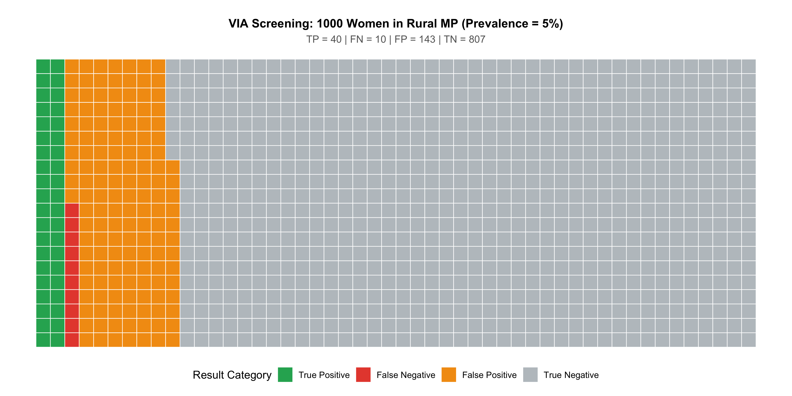
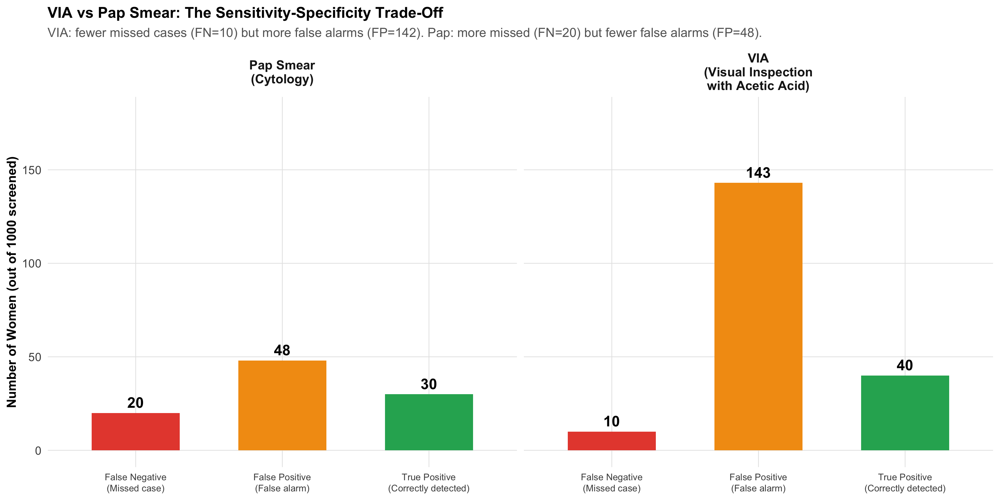
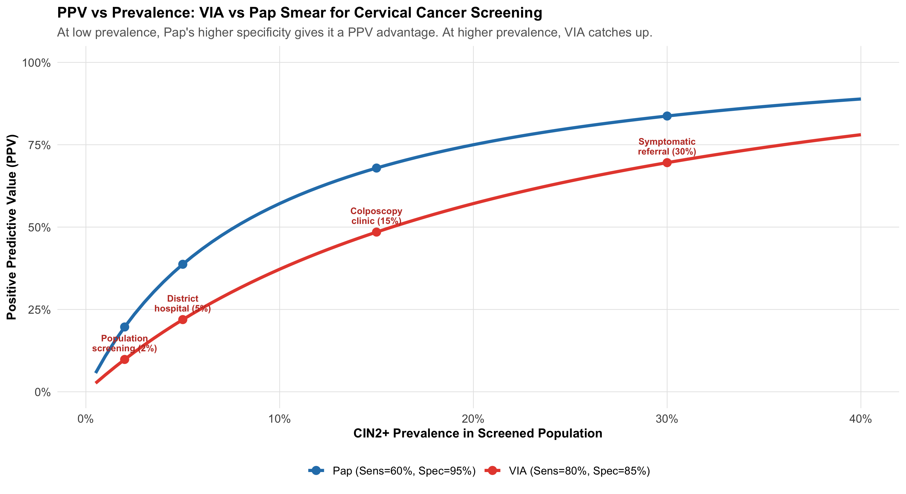
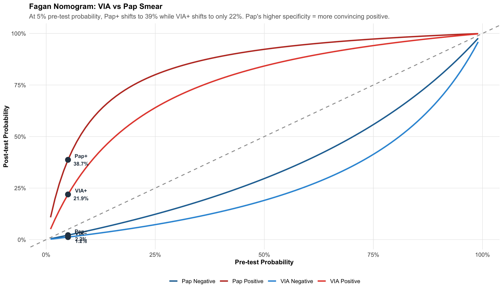
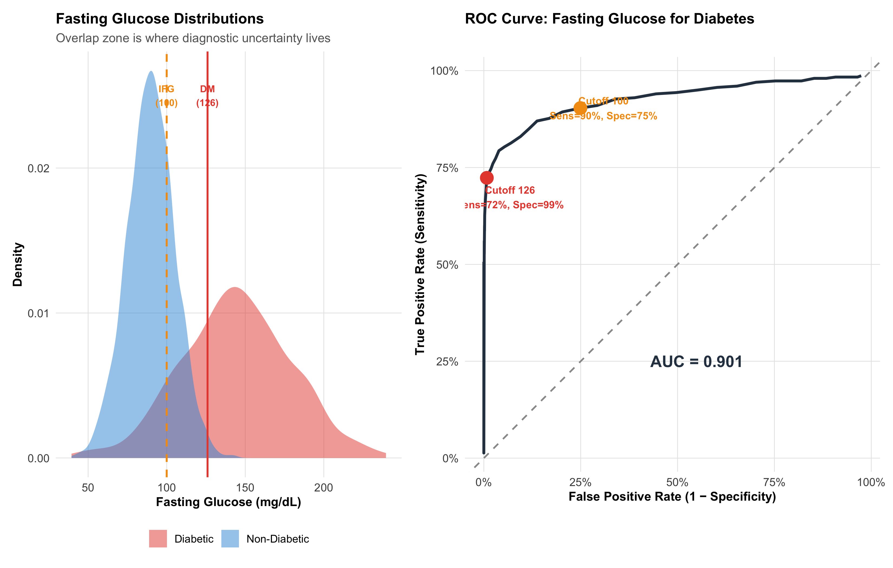
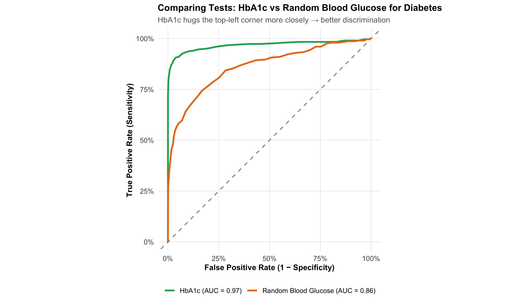
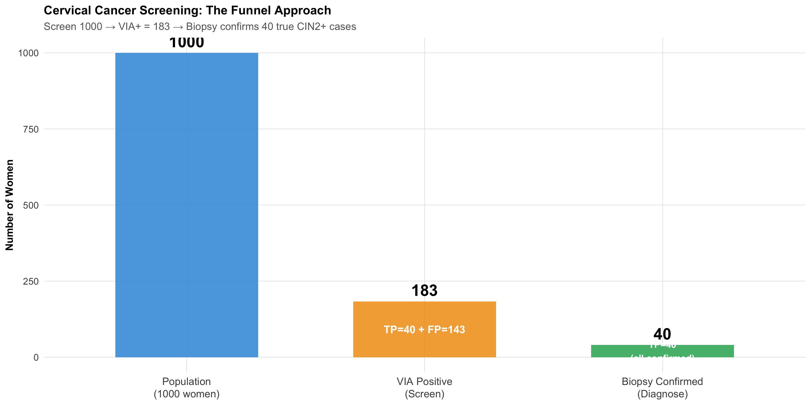
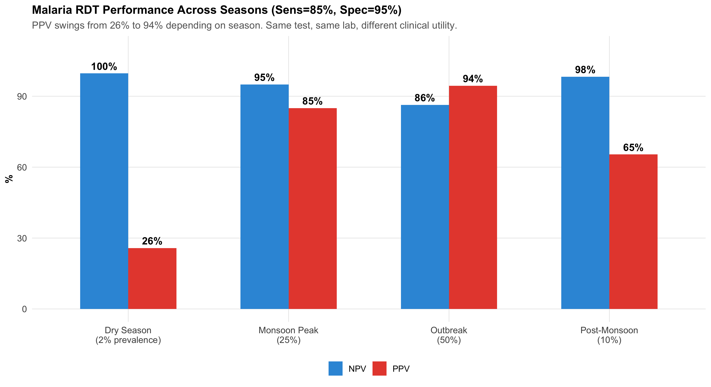
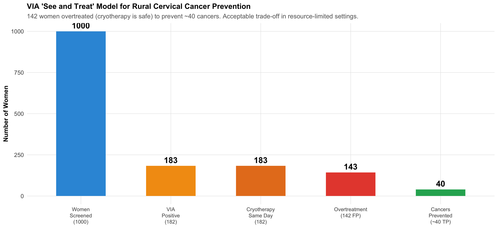

Construct a 2×2 contingency table with the index test in rows and gold standard in columns
Calculate sensitivity, specificity, PPV, and NPV from the 2×2 table
Explain how prevalence transforms predictive values — the same test behaves differently in different populations
Compute and interpret likelihood ratios (LR+ and LR−) as prevalence-independent measures of test performance
Use the Fagan nomogram to move from pre-test to post-test probability
Construct and interpret ROC curves and understand AUC
Choose the optimal cutoff for a test based on clinical context
Decide when to prioritise sensitivity vs specificity in test selection
Apply these concepts to Indian clinical scenarios: cervical cancer screening, TB, and malaria
Builds on Module 4
This module assumes you understand conditional probability, Bayes’ theorem, and natural frequencies from Module 4: Probability and Clinical Reasoning. If concepts like “pre-test probability” or “likelihood ratio” feel unfamiliar, review Module 4 first.
6.2 Real-World Dilemma: Cervical Cancer Screening in Rural India
India bears nearly a quarter of the global cervical cancer burden. In many rural districts, Pap smear infrastructure is unavailable — cytology labs are hours away and results take weeks. So the government promotes VIA (Visual Inspection with Acetic Acid) as an alternative screening test.
A community health worker in a tribal district of Madhya Pradesh screens 1000 women with VIA. The results are compared against colposcopy-directed biopsy (the gold standard).
VIA test characteristics:
Sensitivity: ~80%
Specificity: ~85%
Pap smear test characteristics:
Sensitivity: ~60%
Specificity: ~95%
The district medical officer asks: “VIA is more sensitive, so isn’t it the better test?”
The answer is: it depends on what you need the test to do — and understanding that requires the full diagnostic test evaluation toolkit.
This module gives you that toolkit.
6.3 Part 1: The 2×2 Contingency Table
Every diagnostic test evaluation begins with comparing the index test (the test being evaluated) against a gold standard (the reference standard that defines “true” disease status).
The Standard Layout
The conventional arrangement places the index test result in rows and the gold standard in columns:
Table 6.1: Standard 2×2 Table Layout: Index Test in Rows, Gold Standard in Columns
Gold Standard
Disease Present
Disease Absent
Row Total
**Test Positive**
True Positive (TP)
False Positive (FP)
TP + FP
**Test Negative**
False Negative (FN)
True Negative (TN)
FN + TN
**Total**
TP + FN
FP + TN
N
Key definitions:
True Positive (TP): Test says positive, patient truly has the disease
False Positive (FP): Test says positive, but patient does NOT have the disease (right upper corner — “false alarm”)
False Negative (FN): Test says negative, but patient truly HAS the disease (left lower corner — “missed case”)
True Negative (TN): Test says negative, patient truly does not have the disease
Worked Example: VIA Screening in Rural MP
Let’s construct the 2×2 table for the VIA cervical cancer screening scenario. Suppose in a population of 1000 women screened, cervical precancer/cancer prevalence is 5%.
Table 6.2: 2×2 Table: VIA Screening for Cervical Precancer (n = 1000, Prevalence = 5%)
Colposcopy-Directed Biopsy (Gold Standard)
CIN2+ Present (Biopsy)
CIN2+ Absent (Biopsy)
Row Total
**VIA Positive**
40
143
183
**VIA Negative**
10
807
817
**Total**
50
950
1000
Reading the table:
Of 50 women with CIN2+ (precancer), VIA correctly identified 40 (true positives) and missed 10 (false negatives)
Of 950 women without CIN2+, VIA correctly cleared 807 (true negatives) but falsely flagged 143 (false positives)
Visual: The 2×2 Table as an Icon Array

Figure 6.1: 1000 Women Screened with VIA: Each square is one woman. Green = correct result, Red = incorrect result. Note the large number of false positives (red, bottom-right cluster) even though specificity is 85%.
Common Mistake: Getting the 2×2 Layout Wrong
Many students place disease status in rows and test result in columns. While mathematically equivalent, the standard convention (as used in most textbooks, NEET PG, and USMLE) places the index test in rows and the gold standard (reference) in columns. This means:
FP is in the top-right cell (test positive, disease absent)
FN is in the bottom-left cell (test negative, disease present)
Getting this layout right is essential for exam questions.
6.4 Part 2: Sensitivity and Specificity — Intrinsic Properties of the Test
These two measures describe how well the test performs by itself — they don’t change when you take the test to a different population (unlike PPV and NPV, which do).
“Of everyone who truly does NOT have the disease, what fraction does the test correctly clear?”
VIA vs Pap Smear: Head-to-Head

Figure 6.2: VIA vs Pap Smear: A Trade-Off. VIA catches more cases (higher sensitivity) but produces more false alarms (lower specificity). Pap misses more cases but has fewer false alarms.
SnNOut — Sensitive test, Negative result, rules Out disease. If a highly sensitive test is negative, you can confidently say the patient doesn’t have the disease.
SpPIn — Specific test, Positive result, rules In disease. If a highly specific test is positive, you can confidently say the patient has the disease.
VIA is more useful for SnNOut (screening: don’t miss cases). Pap is more useful for SpPIn (confirmation: don’t overtreat).
6.5 Part 3: Predictive Values — How Prevalence Changes Everything
As you learned in Module 4, the same test behaves very differently depending on how common the disease is in the population being tested. Sensitivity and specificity are properties of the test. Predictive values are properties of the test in a specific population.
Interpretation: Of every 100 women who screen VIA-positive, only about 22 actually have CIN2+. The remaining ~78 will undergo unnecessary colposcopy — anxiety, cost, and discomfort for nothing.
VIA vs Pap: Predictive Value Comparison
Table 6.3: Head-to-Head: VIA vs Pap Smear at 5% Prevalence
Metric
VIA
Pap Smear
Clinical Implication
Sensitivity
80%
60%
VIA catches more cases (better for screening)
Specificity
85%
95%
Pap has fewer false alarms (better for confirmation)
PPV
21.9%
38.5%
Pap: fewer unnecessary colposcopies
NPV
98.8%
97.8%
Both excellent for ruling out
False Positives (per 1000)
143
48
VIA: 142 unnecessary referrals vs Pap: 48
False Negatives (per 1000)
10
20
VIA: 10 missed vs Pap: 20 missed
The Prevalence Effect: Same Tests, Different Populations

Figure 6.3: PPV vs Prevalence for VIA and Pap Smear. At low prevalence (screening camps), both tests have low PPV — but Pap’s higher specificity gives it an advantage. At higher prevalence (referral clinics), both perform well.
Why India Chose VIA for Community Screening
Despite its lower specificity (more false positives), VIA was chosen for the national cervical cancer screening programme because:
Higher sensitivity catches more precancers — critical when follow-up is uncertain in rural settings
“See and treat” approach — VIA-positive women can receive cryotherapy the same day, avoiding loss to follow-up
No lab infrastructure needed — works with acetic acid, a speculum, and a trained health worker
Lower specificity is acceptable when the cost of a false positive (an unnecessary colposcopy) is much less than the cost of a false negative (missed cancer progressing to invasive disease)
The test selection depends on the clinical context and healthcare system, not just the numbers.
6.6 Part 4: Likelihood Ratios — The Prevalence-Independent Power Tool
Sensitivity and specificity describe the test. PPV and NPV depend on prevalence. Is there a single measure that captures test performance and works across all populations?
Yes: Likelihood Ratios. As introduced in Module 4, they connect directly to Bayesian updating.
Key insight: Pap has a much higher LR+ (12 vs 5.3) — so a positive Pap is more convincing than a positive VIA. But VIA has a better LR− (0.24 vs 0.42) — so a negative VIA is more reassuring than a negative Pap.
This quantifies the SnNOut/SpPIn trade-off precisely.
6.7 Part 5: The Fagan Nomogram — Visual Bayesian Updating
The Fagan nomogram is a graphical tool that lets you move from pre-test probability to post-test probability using likelihood ratios — without doing any calculation.

Figure 6.4: Pre-Test to Post-Test Probability for VIA and Pap Smear. Red lines = after positive test; Blue lines = after negative test. Pap’s positive result (LR+ = 12) shifts probability more dramatically than VIA’s (LR+ = 5.3).
Reading the Fagan Nomogram
Start on the x-axis at your pre-test probability (clinical estimate before any test)
Draw a vertical line up to the relevant curve (positive or negative result)
Read across to the y-axis — that’s your post-test probability
At 5% pre-test probability:
VIA positive → post-test ~22% (needs confirmation)
Pap positive → post-test ~39% (stronger evidence, may warrant treatment)
VIA negative → post-test ~1.2% (good rule-out)
Pap negative → post-test ~2.2% (adequate rule-out, but worse than VIA)
6.8 Part 6: ROC Curves — Choosing the Best Cutoff
Many diagnostic tests don’t give a simple “positive/negative” — they produce a continuous measurement (blood glucose, tumour marker, antibody titre). We choose a cutoff to classify results as positive or negative. Different cutoffs give different sensitivity-specificity trade-offs.
The ROC (Receiver Operating Characteristic) curve plots sensitivity vs (1 − specificity) for every possible cutoff, showing you the complete trade-off landscape.
Building an ROC Curve: Fasting Glucose for Diabetes

Figure 6.5: ROC Curve for Fasting Blood Glucose as a Diabetes Screening Test. Each point is a different cutoff value. The curve shows the trade-off: lowering the cutoff catches more diabetics (higher sensitivity) but also more false positives (lower specificity).
Bottom-right = useless test (sensitivity = 0%, FPR = 100%)
Diagonal = no discrimination (random coin flip)
Closer to top-left = better discrimination
The two cutoff points:
Cutoff 100 mg/dL (IFG threshold): High sensitivity (90%), moderate specificity (75%) — good for screening (don’t miss pre-diabetics)
Cutoff 126 mg/dL (DM threshold): Lower sensitivity (72%), high specificity (99%) — good for diagnosis (don’t overdiagnose)
AUC: Summarising Overall Test Performance
The Area Under the ROC Curve (AUC) captures the test’s overall ability to discriminate between diseased and non-diseased individuals across all possible cutoffs.
Table 6.5: AUC Interpretation Scale
AUC Range
Discrimination
Clinical Analogy
0.90 – 1.00
Excellent
Troponin for MI — near-perfect separation
0.80 – 0.90
Good
GeneXpert for TB — reliably distinguishes
0.70 – 0.80
Fair
CRP for infection — helpful but imperfect
0.60 – 0.70
Poor
ESR for inflammation — barely better than chance
0.50
None (coin flip)
Random guess — test is worthless
Practical meaning of AUC: AUC = 0.9 means if you randomly pick one diabetic and one non-diabetic person, there’s a 90% chance the diabetic has a higher fasting glucose.
Comparing Two Tests: ROC Curves Side by Side

Figure 6.6: Comparing Two Diagnostic Tests by ROC Curves. The curve closer to the top-left corner is the better test. The difference in AUC quantifies how much better.
6.9 Part 7: Choosing the Right Test — When Sensitivity vs Specificity Matters
Different clinical situations demand different test properties. The choice is not about which test is “better” in the abstract — it’s about which test fits the clinical question.
Table 6.6: When to Prioritise Sensitivity vs Specificity
Clinical Scenario
Priority
Why
Indian Example
Community screening (healthy population)
HIGH Sensitivity
Don't miss cases — false negatives are costly
VIA for cervical cancer; Rapid antigen for COVID
Confirmation after positive screen
HIGH Specificity
Reduce false positives before invasive treatment
Colposcopy + biopsy after VIA+; RT-PCR after antigen+
Ruling out a dangerous condition
HIGH Sensitivity
False negative = patient sent home with dangerous disease
D-dimer for PE; CT head for stroke
Disease very rare in population
HIGH Specificity
Low prevalence → FP vastly outnumber TP → need high Spec
HIV screening in low-prevalence population
Disease very common (outbreak)
HIGH Sensitivity
High prevalence → TP outnumber FP → Sens determines yield
Malaria RDT during monsoon outbreak
Treatment is toxic or irreversible
HIGH Specificity
False positive → unnecessary harm from treatment
Starting chemotherapy based on biopsy
The Two-Step Strategy: Screen Then Confirm
Most diagnostic pathways use this approach:
Step 1 — Screening test (high sensitivity, moderate specificity): Cast a wide net, catch as many cases as possible. Accept some false positives.
Step 2 — Confirmatory test (high specificity, moderate sensitivity): Among those who screened positive, use a specific test to separate true positives from false positives.

Figure 6.7: The Two-Step Diagnostic Strategy: Screen with a sensitive test, then confirm with a specific test. This approach maximises detection while minimising unnecessary treatment.
Table 6.7: Two-Step Diagnostic Pathways Used in Indian Public Health
Pathway
Screening Test
Confirmatory Test
Screen: Sens / Spec
Confirm: Sens / Spec
Cervical Cancer
VIA
Colposcopy + Biopsy
80% / 85%
95% / 95%
Tuberculosis
Symptom screening + sputum smear
GeneXpert MTB/RIF + Culture
70% / 90%
98% / 99%
HIV
Rapid antibody test
Western blot / NAAT
99% / 99%
99.9% / 99.9%
Breast Cancer
Clinical breast exam
Mammography + Biopsy
60% / 95%
90% / 95%
6.10 Part 8: Indian Clinical Scenarios
Scenario 1: TB Diagnostics — GeneXpert in a Rural PHC
Setting: Primary health centre in Bihar; TB prevalence among symptomatic patients ~3%.
Figure 6.8: GeneXpert for TB: Excellent discrimination. At 3% prevalence, PPV = 75% and NPV = 99.9%. This is what happens when you have very high specificity — PPV stays useful even at low prevalence.
Why GeneXpert works so well even at low prevalence: Its 99% specificity is the key. At 3% prevalence, there are 9,700 non-diseased people. With 99% specificity, only 97 test falsely positive. Compare this to a test with 90% specificity — that would give 970 false positives, destroying the PPV. High specificity protects PPV at low prevalence.
Scenario 2: Malaria RDT Across Seasons
Setting: Monsoon season in a tribal belt of Chhattisgarh — malaria prevalence ~25%. Dry season in the same region — prevalence drops to ~2%.
Test: Rapid Diagnostic Test for P. falciparum — Sensitivity: 85%, Specificity: 95%

Figure 6.9: Malaria RDT: Same test, different seasons, dramatically different PPV. During monsoon (25% prevalence), PPV = 85% — highly useful. During dry season (2%), PPV drops to 26% — most positives are false alarms.
Clinical action: During monsoon, a positive RDT is reliable enough to start treatment. During dry season, a positive RDT needs confirmation with peripheral smear microscopy.
Scenario 3: Cervical Cancer Screening — VIA in the “See and Treat” Model

Figure 6.10: The ‘See and Treat’ Model: VIA’s strength is not in PPV — it’s in the ability to immediately treat positives with cryotherapy on the same visit, preventing loss to follow-up.
The programme logic: In rural India where follow-up is unreliable, VIA + immediate cryotherapy catches 80% of precancers in a single visit. The 142 women who receive unnecessary cryotherapy (false positives) experience minimal harm — cryotherapy is a simple, safe outpatient procedure. But the 40 women whose precancers are caught and treated are spared invasive cervical cancer. The trade-off is overwhelmingly favourable.
This is a clear example of why test selection depends on the healthcare context, not just the statistical properties.
6.11 Summary and Key Takeaways
What this module added to Module 4’s foundation:
The 2×2 table is the organising structure — index test in rows, gold standard in columns, FP in the top-right corner
Sensitivity and specificity are intrinsic test properties that don’t change across populations. PPV and NPV do change with prevalence.
Likelihood ratios are the prevalence-independent bridge — LR+ > 10 is near-diagnostic, LR− < 0.1 is near-exclusion
ROC curves show the complete sensitivity-specificity trade-off for continuous tests. AUC summarises overall discrimination.
Test selection depends on clinical context: screening → high sensitivity (SnNOut); confirmation → high specificity (SpPIn)
Two-step strategy (screen then confirm) is the standard approach in public health and clinical practice
Context matters enormously — VIA was chosen for India not because it has the best PPV, but because it fits a “see and treat” model that prevents loss to follow-up
6.12 Further Learning Resources
Video Lectures
StatQuest with Josh Starmer — “Sensitivity and Specificity” (YouTube) Clear visual explanation of the 2×2 table and its derivatives.
StatQuest — “ROC and AUC, Clearly Explained!” (YouTube) The definitive visual guide to ROC curves.
Zedstatistics (Andrew Mead) — “Diagnostic Test Evaluation” playlist (YouTube) Step-by-step walkthrough with clinical examples.
Textbooks
Sackett DL et al (2005). Clinical Epidemiology: A Basic Science for Clinical Medicine. 3rd ed. Ch 4: Diagnosis. Gold standard for diagnostic test evaluation in clinical context.
Kirkwood BR & Sterne JAC (2003). Essential Medical Statistics. 2nd ed. Ch 36: Diagnostic tests and screening. Clear statistical treatment with worked examples.
Indian Context
NTEP (National TB Elimination Program) Guidelines — GeneXpert sensitivity/specificity recommendations for Indian populations.
Operational Framework for Cervical Cancer Screening and Management (MOHFW, India) — VIA implementation guidelines, “see and treat” protocol.
NVBDCP Guidelines — Malaria RDT use across endemic and non-endemic zones.
6.13 Practice MCQs: NEET PG Level
Q1. In the standard 2×2 table for diagnostic test evaluation with the index test in rows and gold standard in columns, which cell represents false positives?
✘ A. Top-left (Test+, Disease+) — This is the True Positive cell — the test correctly identified a diseased person.
✔ B. Top-right (Test+, Disease−) — Correct! In the standard layout (test in rows, gold standard in columns), the top-right cell is where the test says positive but the gold standard says no disease — a false positive (false alarm). This is the cell that inflates when specificity is low.
✘ C. Bottom-left (Test−, Disease+) — This is the False Negative cell — the test missed a diseased person. A very different kind of error from a false positive.
✘ D. Bottom-right (Test−, Disease−) — This is the True Negative cell — the test correctly identified a non-diseased person.
Q2. VIA screening for cervical cancer has 80% sensitivity and 85% specificity. Pap smear has 60% sensitivity and 95% specificity. In a population screening programme where follow-up is unreliable, which test is preferred and why?
✘ A. Pap smear because it has higher specificity — Higher specificity reduces false positives, but in a setting where follow-up is unreliable, missing cases (false negatives) is the greater danger. A woman who screens negative and is lost to follow-up may progress to invasive cancer.
✔ B. VIA because higher sensitivity catches more cases and allows same-day treatment — Correct! VIA’s higher sensitivity (80% vs 60%) means fewer missed precancers. Combined with the ‘see and treat’ model (cryotherapy on the same visit), VIA prevents loss to follow-up — a critical advantage in rural India. The higher false positive rate is acceptable because cryotherapy is safe and inexpensive.
✘ C. Pap smear because it has higher PPV — While Pap does have higher PPV due to its specificity, PPV alone doesn’t determine the best screening strategy. The clinical context — unreliable follow-up, need for same-day treatment — makes sensitivity and logistics more important.
✘ D. Neither — both are equally good — The two tests have very different sensitivity-specificity profiles and serve different clinical roles. In resource-limited settings with unreliable follow-up, VIA is clearly preferred for population screening.
Q3. A tuberculosis test has sensitivity 98% and specificity 99%. At 3% prevalence, 1,000 patients are tested. How many false positives will occur?
✘ A. 20 — This would be the false negative count: 1000 × 0.03 × (1-0.98) = 0.6, rounded. But 20 comes from misapplying (1-sensitivity) to the wrong denominator.
✔ B. About 10 — Correct! False positives come from the non-diseased group. Non-diseased = 1000 × 0.97 = 970. FP = 970 × (1 − 0.99) = 970 × 0.01 = 9.7 ≈ 10. This is why 99% specificity is so valuable — even with 970 non-diseased patients, only ~10 test falsely positive.
✘ C. 30 — This treats 3% as the false positive rate, but specificity is 99%, making the false positive rate 1%. FP = non-diseased × (1-specificity) = 970 × 0.01 ≈ 10.
✘ D. 97 — This would be the result if specificity were 90% (970 × 0.10 = 97). With 99% specificity, the false positive rate is only 1%.
Q4. A malaria RDT has sensitivity 85% and specificity 95%. During monsoon (prevalence 25%), LR+ = 17. During dry season (prevalence 2%), LR+ is still 17. Why does PPV change so dramatically between seasons if LR+ stays the same?
✘ A. LR+ actually changes between seasons — LR+ is calculated from sensitivity and specificity, which are intrinsic properties of the test. They don’t change between seasons. LR+ = Sensitivity / (1 − Specificity) = 0.85 / 0.05 = 17 regardless of prevalence.
✘ B. The lab technician performs differently in monsoon — The test characteristics (sensitivity and specificity) are determined by the test kit, not the season or technician. LR+ remains constant.
✔ C. PPV depends on pre-test probability (prevalence), not just on LR+. LR+ multiplies the pre-test odds — different starting odds give different post-test odds even with the same LR+ — Correct! Post-test odds = pre-test odds × LR+. During monsoon, pre-test odds = 0.25/0.75 = 0.33. Post-test odds = 0.33 × 17 = 5.67 → PPV = 85%. During dry season, pre-test odds = 0.02/0.98 = 0.02. Post-test odds = 0.02 × 17 = 0.35 → PPV = 26%. Same multiplication, different starting point, vastly different result.
✘ D. PPV doesn’t actually change — only NPV does — Both PPV and NPV change with prevalence. PPV increases with higher prevalence (more true disease cases to find), and NPV decreases (more false negatives among the larger diseased group).
Q5. An ROC curve for a new biomarker has AUC = 0.55. What does this mean clinically?
✘ A. The test has 55% sensitivity — AUC is not the same as sensitivity. AUC summarises the test’s discrimination ability across ALL possible cutoffs, not at any single cutoff.
✘ B. The test correctly classifies 55% of patients — AUC is not an accuracy measure. It represents the probability that a randomly chosen diseased person has a higher test value than a randomly chosen non-diseased person.
✔ C. The test has essentially no clinical value — it barely beats a coin flip (AUC = 0.5) — Correct! AUC = 0.5 means random guessing (no discrimination). AUC = 0.55 is barely above chance — if you randomly pick one diseased and one non-diseased person, there’s only a 55% chance the test gives a higher value to the diseased person. This test should not be used for clinical decisions.
✘ D. The test is moderately good for diagnosis — Moderate discrimination typically requires AUC of 0.70–0.80. An AUC of 0.55 is in the ‘poor to none’ range — only 5% above random guessing.
6.14 References
Source Code
---title: "Diagnostic Test Evaluation"subtitle: "The Clinician's Toolkit for Measuring How Well Tests Work"description: | Learn to evaluate diagnostic tests using 2×2 tables, sensitivity, specificity, predictive values, likelihood ratios, and ROC curves. Apply these tools to real Indian clinical scenarios including cervical cancer screening, TB diagnosis, and malaria testing.categories: - Diagnostic Statistics - Clinical Epidemiology - ROC Analysis---```{r}#| label: setup#| include: falselibrary(tidyverse)library(kableExtra)source("../R/mcq.R")library(patchwork)library(scales)set.seed(42)theme_clean <-function() {theme_minimal(base_size =12) +theme(plot.title =element_text(face ="bold", size =13),plot.subtitle =element_text(size =11, color ="gray40"),panel.grid.minor =element_blank(),panel.grid.major =element_line(color ="gray90", linewidth =0.3),axis.text =element_text(size =10),axis.title =element_text(size =11, face ="bold"),legend.position ="bottom",legend.title =element_text(face ="bold") )}```::: {.callout-note appearance="minimal"}**Lecture slides for this module:** [Open Slides](../slides/05-diagnostic-slides.html){target="_blank"}:::## Learning ObjectivesBy the end of this module, you will be able to:1. Construct a **2×2 contingency table** with the index test in rows and gold standard in columns2. Calculate **sensitivity, specificity, PPV, and NPV** from the 2×2 table3. Explain how **prevalence transforms predictive values** — the same test behaves differently in different populations4. Compute and interpret **likelihood ratios** (LR+ and LR−) as prevalence-independent measures of test performance5. Use the **Fagan nomogram** to move from pre-test to post-test probability6. Construct and interpret **ROC curves** and understand AUC7. Choose the **optimal cutoff** for a test based on clinical context8. Decide when to prioritise **sensitivity vs specificity** in test selection9. Apply these concepts to Indian clinical scenarios: **cervical cancer screening, TB, and malaria**::: {.callout-tip title="Builds on Module 4"}This module assumes you understand **conditional probability**, **Bayes' theorem**, and **natural frequencies** from [Module 4: Probability and Clinical Reasoning](04-probability.qmd). If concepts like "pre-test probability" or "likelihood ratio" feel unfamiliar, review Module 4 first.:::---:::{.clinical-hook}## Real-World Dilemma: Cervical Cancer Screening in Rural IndiaIndia bears nearly a quarter of the global cervical cancer burden. In many rural districts, Pap smear infrastructure is unavailable — cytology labs are hours away and results take weeks. So the government promotes **VIA (Visual Inspection with Acetic Acid)** as an alternative screening test.A community health worker in a tribal district of Madhya Pradesh screens 1000 women with VIA. The results are compared against colposcopy-directed biopsy (the gold standard).**VIA test characteristics:**- Sensitivity: ~80%- Specificity: ~85%**Pap smear test characteristics:**- Sensitivity: ~60%- Specificity: ~95%The district medical officer asks: *"VIA is more sensitive, so isn't it the better test?"*The answer is: **it depends on what you need the test to do** — and understanding that requires the full diagnostic test evaluation toolkit.This module gives you that toolkit.:::---## Part 1: The 2×2 Contingency TableEvery diagnostic test evaluation begins with comparing the **index test** (the test being evaluated) against a **gold standard** (the reference standard that defines "true" disease status).### The Standard LayoutThe conventional arrangement places the **index test result in rows** and the **gold standard in columns**:```{r}#| label: tbl-2x2-layout#| echo: false#| tbl-cap: "Standard 2×2 Table Layout: Index Test in Rows, Gold Standard in Columns"layout_df <-data.frame(``=c("**Test Positive**", "**Test Negative**", "**Total**"),`Disease Present`=c("True Positive (TP)", "False Negative (FN)", "TP + FN"),`Disease Absent`=c("False Positive (FP)", "True Negative (TN)", "FP + TN"),`Row Total`=c("TP + FP", "FN + TN", "N"),check.names =FALSE)kable(layout_df, format ="html", escape =FALSE, align ="c") %>%kable_styling(bootstrap_options =c("striped", "hover", "condensed"),full_width =TRUE) %>%add_header_above(c(" "=1, "Gold Standard"=2, " "=1)) %>%column_spec(1, bold =TRUE, width ="20%") %>%row_spec(3, bold =TRUE, background ="#f0f0f0")```**Key definitions:**- **True Positive (TP):** Test says positive, patient truly has the disease- **False Positive (FP):** Test says positive, but patient does NOT have the disease *(right upper corner — "false alarm")*- **False Negative (FN):** Test says negative, but patient truly HAS the disease *(left lower corner — "missed case")*- **True Negative (TN):** Test says negative, patient truly does not have the disease### Worked Example: VIA Screening in Rural MPLet's construct the 2×2 table for the VIA cervical cancer screening scenario. Suppose in a population of 1000 women screened, cervical precancer/cancer prevalence is 5%.```{r}#| label: tbl-2x2-via#| echo: false#| tbl-cap: "2×2 Table: VIA Screening for Cervical Precancer (n = 1000, Prevalence = 5%)"total_n <-1000prev <-0.05sens_via <-0.80spec_via <-0.85diseased <- total_n * prevhealthy <- total_n * (1- prev)tp_via <-round(diseased * sens_via)fn_via <- diseased - tp_viafp_via <-round(healthy * (1- spec_via))tn_via <- healthy - fp_viavia_2x2 <-data.frame(``=c("**VIA Positive**", "**VIA Negative**", "**Total**"),`CIN2+ Present (Biopsy)`=c(tp_via, fn_via, diseased),`CIN2+ Absent (Biopsy)`=c(fp_via, tn_via, healthy),`Row Total`=c(tp_via + fp_via, fn_via + tn_via, total_n),check.names =FALSE)kable(via_2x2, format ="html", escape =FALSE, align ="c") %>%kable_styling(bootstrap_options =c("striped", "hover", "condensed"),full_width =TRUE) %>%add_header_above(c(" "=1, "Colposcopy-Directed Biopsy (Gold Standard)"=2, " "=1)) %>%column_spec(1, bold =TRUE) %>%row_spec(3, bold =TRUE, background ="#f0f0f0")```**Reading the table:**- Of `r diseased` women with CIN2+ (precancer), VIA correctly identified `r tp_via` (**true positives**) and missed `r fn_via` (**false negatives**)- Of `r healthy` women without CIN2+, VIA correctly cleared `r tn_via` (**true negatives**) but falsely flagged `r fp_via` (**false positives**)### Visual: The 2×2 Table as an Icon Array```{r}#| label: fig-via-icon-array#| fig-cap: "1000 Women Screened with VIA: Each square is one woman. Green = correct result, Red = incorrect result. Note the large number of false positives (red, bottom-right cluster) even though specificity is 85%."#| echo: false#| fig-width: 12#| fig-height: 6# Create icon array dataicon_data <-tibble(id =1:total_n,category =c(rep("True Positive", tp_via),rep("False Negative", fn_via),rep("False Positive", fp_via),rep("True Negative", tn_via) )) %>%mutate(row = ((id -1) %%20) +1,col = ((id -1) %/%20) +1,category =factor(category,levels =c("True Positive", "False Negative","False Positive", "True Negative")) )icon_colours <-c("True Positive"="#27ae60","False Negative"="#e74c3c","False Positive"="#f39c12","True Negative"="#bdc3c7")ggplot(icon_data, aes(x = col, y = row, fill = category)) +geom_tile(colour ="white", linewidth =0.3) +scale_fill_manual(values = icon_colours, name ="Result Category") +coord_fixed() +labs(title ="VIA Screening: 1000 Women in Rural MP (Prevalence = 5%)",subtitle =paste0("TP = ", tp_via, " | FN = ", fn_via," | FP = ", fp_via, " | TN = ", tn_via) ) +theme_void(base_size =12) +theme(plot.title =element_text(face ="bold", size =13, hjust =0.5),plot.subtitle =element_text(size =11, hjust =0.5, colour ="grey40"),legend.position ="bottom" )```:::{.common-mistake}### Common Mistake: Getting the 2×2 Layout WrongMany students place disease status in rows and test result in columns. While mathematically equivalent, the **standard convention** (as used in most textbooks, NEET PG, and USMLE) places the **index test in rows** and the **gold standard (reference) in columns**. This means:- **FP is in the top-right cell** (test positive, disease absent)- **FN is in the bottom-left cell** (test negative, disease present)Getting this layout right is essential for exam questions.:::---## Part 2: Sensitivity and Specificity — Intrinsic Properties of the TestThese two measures describe how well the test performs *by itself* — they don't change when you take the test to a different population (unlike PPV and NPV, which do).:::{.formula-box}### Sensitivity and Specificity**Sensitivity (True Positive Rate):**$$\text{Sensitivity} = \frac{TP}{TP + FN} = \frac{\text{True Positives}}{\text{All Diseased}}$$*"Of everyone who truly HAS the disease, what fraction does the test correctly identify?"***Specificity (True Negative Rate):**$$\text{Specificity} = \frac{TN}{FP + TN} = \frac{\text{True Negatives}}{\text{All Non-Diseased}}$$*"Of everyone who truly does NOT have the disease, what fraction does the test correctly clear?"*:::### VIA vs Pap Smear: Head-to-Head```{r}#| label: fig-via-vs-pap#| fig-cap: "VIA vs Pap Smear: A Trade-Off. VIA catches more cases (higher sensitivity) but produces more false alarms (lower specificity). Pap misses more cases but has fewer false alarms."#| echo: false#| fig-width: 12#| fig-height: 6# Pap smear datasens_pap <-0.60spec_pap <-0.95tp_pap <-round(diseased * sens_pap)fn_pap <- diseased - tp_papfp_pap <-round(healthy * (1- spec_pap))tn_pap <- healthy - fp_papcomparison <-tibble(test =rep(c("VIA\n(Visual Inspection\nwith Acetic Acid)", "Pap Smear\n(Cytology)"), each =4),metric =rep(c("True Positive\n(Correctly detected)", "False Negative\n(Missed case)","False Positive\n(False alarm)", "True Negative\n(Correctly cleared)"), 2),count =c(tp_via, fn_via, fp_via, tn_via, tp_pap, fn_pap, fp_pap, tn_pap),fill =rep(c("#27ae60", "#e74c3c", "#f39c12", "#3498db"), 2))# Focus on the key clinical cells: TP, FN, FPcomparison_key <- comparison %>%filter(metric !="True Negative\n(Correctly cleared)")ggplot(comparison_key, aes(x = metric, y = count, fill = fill)) +geom_col(width =0.6) +geom_text(aes(label = count), vjust =-0.5, fontface ="bold", size =4.5) +scale_fill_identity() +facet_wrap(~ test) +scale_y_continuous(limits =c(0, 180)) +labs(title ="VIA vs Pap Smear: The Sensitivity-Specificity Trade-Off",subtitle ="VIA: fewer missed cases (FN=10) but more false alarms (FP=142). Pap: more missed (FN=20) but fewer false alarms (FP=48).",x =NULL, y ="Number of Women (out of 1000 screened)" ) +theme_clean() +theme(strip.text =element_text(face ="bold", size =11),axis.text.x =element_text(size =8, lineheight =1.0))```### Worked Calculations**VIA:**$$\text{Sensitivity} = \frac{`r tp_via`}{`r tp_via` + `r fn_via`} = \frac{`r tp_via`}{`r diseased`} = `r round(sens_via * 100)`\%$$$$\text{Specificity} = \frac{`r tn_via`}{`r fp_via` + `r tn_via`} = \frac{`r tn_via`}{`r healthy`} = `r round(spec_via * 100)`\%$$**Pap smear:**$$\text{Sensitivity} = \frac{`r tp_pap`}{`r tp_pap` + `r fn_pap`} = \frac{`r tp_pap`}{`r diseased`} = `r round(sens_pap * 100)`\%$$$$\text{Specificity} = \frac{`r tn_pap`}{`r fp_pap` + `r tn_pap`} = \frac{`r tn_pap`}{`r healthy`} = `r round(spec_pap * 100)`\%$$:::{.key-concept}### The Clinical Mnemonics- **SnNOut** — **S**ensitive test, **N**egative result, rules **Out** disease. If a highly sensitive test is negative, you can confidently say the patient doesn't have the disease.- **SpPIn** — **Sp**ecific test, **P**ositive result, rules **In** disease. If a highly specific test is positive, you can confidently say the patient has the disease.VIA is more useful for **SnNOut** (screening: don't miss cases). Pap is more useful for **SpPIn** (confirmation: don't overtreat).:::---## Part 3: Predictive Values — How Prevalence Changes EverythingAs you learned in Module 4, the same test behaves very differently depending on **how common the disease is** in the population being tested. Sensitivity and specificity are properties of the test. Predictive values are properties of the **test in a specific population**.:::{.formula-box}### Positive and Negative Predictive Values**Positive Predictive Value (PPV):**$$\text{PPV} = \frac{TP}{TP + FP} = \frac{\text{True Positives}}{\text{All Positive Tests}}$$*"If the test is positive, what's the probability the patient actually has the disease?"***Negative Predictive Value (NPV):**$$\text{NPV} = \frac{TN}{FN + TN} = \frac{\text{True Negatives}}{\text{All Negative Tests}}$$*"If the test is negative, what's the probability the patient truly doesn't have the disease?"*:::### VIA Predictive Values at 5% Prevalence```{r}#| label: via-ppv-npv#| echo: falseppv_via <- tp_via / (tp_via + fp_via)npv_via <- tn_via / (fn_via + tn_via)ppv_pap <- tp_pap / (tp_pap + fp_pap)npv_pap <- tn_pap / (fn_pap + tn_pap)```$$\text{PPV}_{\text{VIA}} = \frac{`r tp_via`}{`r tp_via` + `r fp_via`} = \frac{`r tp_via`}{`r tp_via + fp_via`} = `r round(ppv_via * 100, 1)`\%$$$$\text{NPV}_{\text{VIA}} = \frac{`r tn_via`}{`r fn_via` + `r tn_via`} = \frac{`r tn_via`}{`r fn_via + tn_via`} = `r round(npv_via * 100, 1)`\%$$**Interpretation:** Of every 100 women who screen VIA-positive, only about `r round(ppv_via * 100)` actually have CIN2+. The remaining ~`r 100 - round(ppv_via * 100)` will undergo unnecessary colposcopy — anxiety, cost, and discomfort for nothing.### VIA vs Pap: Predictive Value Comparison```{r}#| label: tbl-via-pap-comparison#| echo: false#| tbl-cap: "Head-to-Head: VIA vs Pap Smear at 5% Prevalence"comp_df <-data.frame(Metric =c("Sensitivity", "Specificity", "PPV", "NPV","False Positives (per 1000)", "False Negatives (per 1000)"),VIA =c(paste0(round(sens_via*100), "%"),paste0(round(spec_via*100), "%"),paste0(round(ppv_via*100, 1), "%"),paste0(round(npv_via*100, 1), "%"), fp_via, fn_via),`Pap Smear`=c(paste0(round(sens_pap*100), "%"),paste0(round(spec_pap*100), "%"),paste0(round(ppv_pap*100, 1), "%"),paste0(round(npv_pap*100, 1), "%"), fp_pap, fn_pap),`Clinical Implication`=c("VIA catches more cases (better for screening)","Pap has fewer false alarms (better for confirmation)","Pap: fewer unnecessary colposcopies","Both excellent for ruling out","VIA: 142 unnecessary referrals vs Pap: 48","VIA: 10 missed vs Pap: 20 missed" ),check.names =FALSE)kable(comp_df, format ="html", escape =FALSE) %>%kable_styling(bootstrap_options =c("striped", "hover"), full_width =TRUE) %>%column_spec(1, bold =TRUE) %>%row_spec(3, background ="#fef9e7") %>%row_spec(5:6, background ="#fdedec")```### The Prevalence Effect: Same Tests, Different Populations```{r}#| label: fig-ppv-prevalence-via-pap#| fig-cap: "PPV vs Prevalence for VIA and Pap Smear. At low prevalence (screening camps), both tests have low PPV — but Pap's higher specificity gives it an advantage. At higher prevalence (referral clinics), both perform well."#| echo: false#| fig-width: 11#| fig-height: 6prev_range <-seq(0.005, 0.40, by =0.005)ppv_via_curve <-sapply(prev_range, function(p) { tp <- p * sens_via; fp <- (1-p) * (1-spec_via); tp / (tp + fp)})ppv_pap_curve <-sapply(prev_range, function(p) { tp <- p * sens_pap; fp <- (1-p) * (1-spec_pap); tp / (tp + fp)})ppv_curves <-tibble(prevalence =rep(prev_range *100, 2),ppv =c(ppv_via_curve *100, ppv_pap_curve *100),test =rep(c("VIA (Sens=80%, Spec=85%)", "Pap (Sens=60%, Spec=95%)"),each =length(prev_range)))key_pts <-tibble(prevalence =rep(c(2, 5, 15, 30), 2),ppv =c(sapply(c(0.02, 0.05, 0.15, 0.30), function(p) { tp <- p*sens_via; fp <- (1-p)*(1-spec_via); tp/(tp+fp)*100 }),sapply(c(0.02, 0.05, 0.15, 0.30), function(p) { tp <- p*sens_pap; fp <- (1-p)*(1-spec_pap); tp/(tp+fp)*100 }) ),test =rep(c("VIA (Sens=80%, Spec=85%)", "Pap (Sens=60%, Spec=95%)"), each =4),setting =rep(c("Population\nscreening (2%)", "District\nhospital (5%)","Colposcopy\nclinic (15%)", "Symptomatic\nreferral (30%)"), 2))ggplot(ppv_curves, aes(x = prevalence, y = ppv, colour = test)) +geom_line(linewidth =1.3) +geom_point(data = key_pts, aes(x = prevalence, y = ppv), size =3) +geom_text(data = key_pts %>%filter(test =="VIA (Sens=80%, Spec=85%)"),aes(x = prevalence, y = ppv +5, label = setting),size =2.8, fontface ="bold", colour ="#c0392b", lineheight =0.9) +scale_colour_manual(values =c("VIA (Sens=80%, Spec=85%)"="#e74c3c","Pap (Sens=60%, Spec=95%)"="#2980b9")) +scale_y_continuous(limits =c(0, 100), labels =function(y) paste0(y, "%")) +scale_x_continuous(labels =function(x) paste0(x, "%")) +labs(title ="PPV vs Prevalence: VIA vs Pap Smear for Cervical Cancer Screening",subtitle ="At low prevalence, Pap's higher specificity gives it a PPV advantage. At higher prevalence, VIA catches up.",x ="CIN2+ Prevalence in Screened Population",y ="Positive Predictive Value (PPV)",colour =NULL ) +theme_clean() +theme(legend.position ="bottom")```:::{.key-concept}### Why India Chose VIA for Community ScreeningDespite its lower specificity (more false positives), VIA was chosen for the national cervical cancer screening programme because:1. **Higher sensitivity** catches more precancers — critical when follow-up is uncertain in rural settings2. **"See and treat" approach** — VIA-positive women can receive cryotherapy the same day, avoiding loss to follow-up3. **No lab infrastructure needed** — works with acetic acid, a speculum, and a trained health worker4. **Lower specificity is acceptable** when the cost of a false positive (an unnecessary colposcopy) is much less than the cost of a false negative (missed cancer progressing to invasive disease)The test selection depends on the **clinical context and healthcare system**, not just the numbers.:::---## Part 4: Likelihood Ratios — The Prevalence-Independent Power ToolSensitivity and specificity describe the test. PPV and NPV depend on prevalence. Is there a single measure that captures test performance *and* works across all populations?**Yes: Likelihood Ratios.** As introduced in Module 4, they connect directly to Bayesian updating.:::{.formula-box}### Likelihood Ratios**Positive Likelihood Ratio (LR+):**$$LR^+ = \frac{\text{Sensitivity}}{1 - \text{Specificity}} = \frac{TPR}{FPR}$$*"How many times more likely is a positive result in someone with disease vs. without?"***Negative Likelihood Ratio (LR−):**$$LR^- = \frac{1 - \text{Sensitivity}}{\text{Specificity}} = \frac{FNR}{TNR}$$*"How much less likely is a negative result in someone with disease vs. without?"*:::### Interpretation Scale```{r}#| label: tbl-lr-interpretation#| echo: false#| tbl-cap: "Likelihood Ratio Interpretation Scale"lr_df <-data.frame(`LR+ Value`=c("> 10", "5 – 10", "2 – 5", "1 – 2", "1"),`Shift in Probability`=c("Large increase (~+45%)","Moderate increase (~+30%)","Small increase (~+15%)","Minimal change","No change (useless test)"),`Clinical Action`=c("Near-diagnostic — strong rule-in","Often sufficient for treatment decisions","Helpful in combination with other evidence","Rarely useful alone","Discard the test"),check.names =FALSE)lr_neg_df <-data.frame(`LR- Value`=c("< 0.1", "0.1 – 0.2", "0.2 – 0.5", "0.5 – 1.0", "1"),`Shift in Probability`=c("Large decrease (~−45%)","Moderate decrease (~−30%)","Small decrease (~−15%)","Minimal change","No change (useless test)"),`Clinical Action`=c("Near-exclusion — strong rule-out","Often sufficient to exclude","Helpful in combination with other evidence","Rarely useful alone","Discard the test"),check.names =FALSE)kable(lr_df, format ="html", escape =FALSE) %>%kable_styling(bootstrap_options =c("striped", "hover"), full_width =TRUE) %>%column_spec(1, bold =TRUE) %>%row_spec(1, background ="#d5f5e3") %>%row_spec(5, background ="#fdedec")```### VIA and Pap Smear Likelihood Ratios```{r}#| label: lr-calculations#| echo: falselr_pos_via <- sens_via / (1- spec_via)lr_neg_via <- (1- sens_via) / spec_vialr_pos_pap <- sens_pap / (1- spec_pap)lr_neg_pap <- (1- sens_pap) / spec_pap```| Test | LR+ | LR− | Interpretation ||:-----|:----|:----|:---------------|| **VIA** |`r round(lr_pos_via, 1)`|`r round(lr_neg_via, 2)`| Moderate rule-in (LR+ ~5), modest rule-out (LR− = 0.24) || **Pap Smear** |`r round(lr_pos_pap, 1)`|`r round(lr_neg_pap, 2)`| Strong rule-in (LR+ = 12), weak rule-out (LR− = 0.42) |**Key insight:** Pap has a much higher LR+ (12 vs 5.3) — so a positive Pap is more convincing than a positive VIA. But VIA has a better LR− (0.24 vs 0.42) — so a negative VIA is more reassuring than a negative Pap.This quantifies the SnNOut/SpPIn trade-off precisely.---## Part 5: The Fagan Nomogram — Visual Bayesian UpdatingThe Fagan nomogram is a graphical tool that lets you move from pre-test probability to post-test probability using likelihood ratios — without doing any calculation.```{r}#| label: fig-fagan-via-pap#| fig-cap: "Pre-Test to Post-Test Probability for VIA and Pap Smear. Red lines = after positive test; Blue lines = after negative test. Pap's positive result (LR+ = 12) shifts probability more dramatically than VIA's (LR+ = 5.3)."#| echo: false#| fig-width: 12#| fig-height: 7pre_test <-seq(0.01, 0.99, by =0.01)calc_post <-function(pre, lr) { odds_pre <- pre / (1- pre) odds_post <- odds_pre * lr odds_post / (1+ odds_post)}fagan_df <-tibble(pre =rep(pre_test *100, 4),post =c(calc_post(pre_test, lr_pos_via) *100,calc_post(pre_test, lr_neg_via) *100,calc_post(pre_test, lr_pos_pap) *100,calc_post(pre_test, lr_neg_pap) *100 ),result =rep(c("VIA Positive", "VIA Negative","Pap Positive", "Pap Negative"), each =length(pre_test)),line_type =rep(c("positive", "negative", "positive", "negative"),each =length(pre_test)))# Key scenario: 5% pre-test probabilityscenarios <-tibble(test =c("VIA+", "VIA−", "Pap+", "Pap−"),pre =5,post =c(calc_post(0.05, lr_pos_via) *100,calc_post(0.05, lr_neg_via) *100,calc_post(0.05, lr_pos_pap) *100,calc_post(0.05, lr_neg_pap) *100 ),colour =c("#e74c3c", "#3498db", "#c0392b", "#2471a3"))ggplot(fagan_df, aes(x = pre, y = post, colour = result)) +geom_line(linewidth =1.1) +geom_abline(intercept =0, slope =1, linetype ="dashed",colour ="grey60", linewidth =0.7) +# Mark 5% pre-test scenariosgeom_point(data = scenarios, aes(x = pre, y = post),size =4, inherit.aes =FALSE, colour ="#2c3e50") +geom_text(data = scenarios,aes(x = pre +3, y = post, label =paste0(test, "\n", round(post, 1), "%")),size =3.2, fontface ="bold", inherit.aes =FALSE, colour ="#2c3e50") +scale_colour_manual(values =c("VIA Positive"="#e74c3c","VIA Negative"="#3498db","Pap Positive"="#c0392b","Pap Negative"="#2471a3" )) +scale_x_continuous(labels =function(x) paste0(x, "%")) +scale_y_continuous(labels =function(y) paste0(y, "%")) +labs(title ="Fagan Nomogram: VIA vs Pap Smear",subtitle ="At 5% pre-test probability, Pap+ shifts to 39% while VIA+ shifts to only 22%. Pap's higher specificity = more convincing positive.",x ="Pre-test Probability",y ="Post-test Probability",colour =NULL ) +theme_clean() +theme(legend.position ="bottom")```:::{.callout-note title="Reading the Fagan Nomogram"}1. Start on the **x-axis** at your pre-test probability (clinical estimate before any test)2. Draw a vertical line up to the **relevant curve** (positive or negative result)3. Read across to the **y-axis** — that's your post-test probabilityAt 5% pre-test probability:- **VIA positive** → post-test ~22% (needs confirmation)- **Pap positive** → post-test ~39% (stronger evidence, may warrant treatment)- **VIA negative** → post-test ~1.2% (good rule-out)- **Pap negative** → post-test ~2.2% (adequate rule-out, but worse than VIA):::---## Part 6: ROC Curves — Choosing the Best CutoffMany diagnostic tests don't give a simple "positive/negative" — they produce a **continuous measurement** (blood glucose, tumour marker, antibody titre). We choose a **cutoff** to classify results as positive or negative. Different cutoffs give different sensitivity-specificity trade-offs.The **ROC (Receiver Operating Characteristic) curve** plots sensitivity vs (1 − specificity) for every possible cutoff, showing you the complete trade-off landscape.### Building an ROC Curve: Fasting Glucose for Diabetes```{r}#| label: fig-roc-glucose#| fig-cap: "ROC Curve for Fasting Blood Glucose as a Diabetes Screening Test. Each point is a different cutoff value. The curve shows the trade-off: lowering the cutoff catches more diabetics (higher sensitivity) but also more false positives (lower specificity)."#| echo: false#| fig-width: 11#| fig-height: 7set.seed(42)n_diabetic <-300n_healthy <-2700# Fasting glucose distributionsglucose_diabetic <-rnorm(n_diabetic, mean =145, sd =35)glucose_healthy <-rnorm(n_healthy, mean =90, sd =15)# Distribution plotdist_df <-tibble(glucose =c(glucose_diabetic, glucose_healthy),status =c(rep("Diabetic", n_diabetic), rep("Non-Diabetic", n_healthy)))p_dist <-ggplot(dist_df, aes(x = glucose, fill = status)) +geom_density(alpha =0.5, colour =NA) +geom_vline(xintercept =c(100, 126), linetype =c("dashed", "solid"),colour =c("#f39c12", "#e74c3c"), linewidth =0.8) +annotate("text", x =100, y =0.025, label ="IFG\n(100)",size =3, fontface ="bold", colour ="#f39c12") +annotate("text", x =126, y =0.025, label ="DM\n(126)",size =3, fontface ="bold", colour ="#e74c3c") +scale_fill_manual(values =c("Diabetic"="#e74c3c", "Non-Diabetic"="#3498db")) +labs(title ="Fasting Glucose Distributions",subtitle ="Overlap zone is where diagnostic uncertainty lives",x ="Fasting Glucose (mg/dL)", y ="Density", fill =NULL) +theme_clean() +theme(legend.position ="bottom")# Calculate ROCcutoffs <-seq(60, 220, by =2)roc_data <-lapply(cutoffs, function(c) { tpr <-sum(glucose_diabetic >= c) / n_diabetic fpr <-sum(glucose_healthy >= c) / n_healthytibble(cutoff = c, tpr = tpr, fpr = fpr)}) %>%bind_rows() %>%arrange(fpr)# AUCauc_val <-sum(diff(roc_data$fpr) * (roc_data$tpr[-1] + roc_data$tpr[-nrow(roc_data)]) /2)# Key cutoffscut_100 <- roc_data[which.min(abs(roc_data$cutoff -100)), ]cut_126 <- roc_data[which.min(abs(roc_data$cutoff -126)), ]p_roc <-ggplot(roc_data, aes(x = fpr, y = tpr)) +geom_path(colour ="#2c3e50", linewidth =1.2) +geom_abline(intercept =0, slope =1, linetype ="dashed",colour ="grey60", linewidth =0.7) +# Key cutoffsgeom_point(data = cut_100, colour ="#f39c12", size =5) +geom_point(data = cut_126, colour ="#e74c3c", size =5) +annotate("text", x = cut_100$fpr +0.06, y = cut_100$tpr,label =paste0("Cutoff 100\nSens=", round(cut_100$tpr*100),"%, Spec=", round((1-cut_100$fpr)*100), "%"),size =3.2, fontface ="bold", colour ="#f39c12") +annotate("text", x = cut_126$fpr +0.06, y = cut_126$tpr -0.05,label =paste0("Cutoff 126\nSens=", round(cut_126$tpr*100),"%, Spec=", round((1-cut_126$fpr)*100), "%"),size =3.2, fontface ="bold", colour ="#e74c3c") +annotate("text", x =0.55, y =0.25,label =paste0("AUC = ", round(auc_val, 3)),size =5, fontface ="bold", colour ="#2c3e50") +scale_x_continuous(labels =percent_format(accuracy =1)) +scale_y_continuous(labels =percent_format(accuracy =1)) +labs(title ="ROC Curve: Fasting Glucose for Diabetes",x ="False Positive Rate (1 − Specificity)",y ="True Positive Rate (Sensitivity)") +theme_clean() +theme(aspect.ratio =1)p_dist + p_roc +plot_layout(widths =c(1, 1.2))```### Understanding the ROC Curve**Moving along the curve:**- **Top-left corner** = perfect test (sensitivity = 100%, FPR = 0%)- **Bottom-right** = useless test (sensitivity = 0%, FPR = 100%)- **Diagonal** = no discrimination (random coin flip)- **Closer to top-left** = better discrimination**The two cutoff points:**- **Cutoff 100 mg/dL (IFG threshold):** High sensitivity (`r round(cut_100$tpr*100)`%), moderate specificity (`r round((1-cut_100$fpr)*100)`%) — good for screening (don't miss pre-diabetics)- **Cutoff 126 mg/dL (DM threshold):** Lower sensitivity (`r round(cut_126$tpr*100)`%), high specificity (`r round((1-cut_126$fpr)*100)`%) — good for diagnosis (don't overdiagnose)### AUC: Summarising Overall Test PerformanceThe **Area Under the ROC Curve (AUC)** captures the test's overall ability to discriminate between diseased and non-diseased individuals across *all* possible cutoffs.```{r}#| label: tbl-auc-interpretation#| echo: false#| tbl-cap: "AUC Interpretation Scale"auc_df <-data.frame(`AUC Range`=c("0.90 – 1.00", "0.80 – 0.90", "0.70 – 0.80","0.60 – 0.70", "0.50"),Discrimination =c("Excellent", "Good", "Fair", "Poor", "None (coin flip)"),`Clinical Analogy`=c("Troponin for MI — near-perfect separation","GeneXpert for TB — reliably distinguishes","CRP for infection — helpful but imperfect","ESR for inflammation — barely better than chance","Random guess — test is worthless" ),check.names =FALSE)kable(auc_df, format ="html", escape =FALSE) %>%kable_styling(bootstrap_options =c("striped", "hover"), full_width =TRUE) %>%column_spec(1, bold =TRUE) %>%row_spec(1, background ="#d5f5e3") %>%row_spec(5, background ="#fdedec")```**Practical meaning of AUC:** AUC = `r round(auc_val, 2)` means if you randomly pick one diabetic and one non-diabetic person, there's a `r round(auc_val * 100)`% chance the diabetic has a higher fasting glucose.### Comparing Two Tests: ROC Curves Side by Side```{r}#| label: fig-roc-comparison#| fig-cap: "Comparing Two Diagnostic Tests by ROC Curves. The curve closer to the top-left corner is the better test. The difference in AUC quantifies how much better."#| echo: false#| fig-width: 10#| fig-height: 6set.seed(42)# Better test: HbA1c (better separation)hba1c_diabetic <-rnorm(300, mean =8.5, sd =1.5)hba1c_healthy <-rnorm(2700, mean =5.5, sd =0.6)# Poorer test: random blood glucose (more overlap)rbg_diabetic <-rnorm(300, mean =200, sd =60)rbg_healthy <-rnorm(2700, mean =120, sd =40)calc_roc <-function(diseased_vals, healthy_vals) { all_vals <-c(diseased_vals, healthy_vals) cutoffs_seq <-seq(min(all_vals) -5, max(all_vals) +5, by = (max(all_vals) -min(all_vals)) /100) roc <-lapply(cutoffs_seq, function(c) { tpr <-sum(diseased_vals >= c) /length(diseased_vals) fpr <-sum(healthy_vals >= c) /length(healthy_vals)tibble(tpr = tpr, fpr = fpr) }) %>%bind_rows() %>%arrange(fpr) roc_sorted <- roc %>%distinct() auc <-sum(diff(roc_sorted$fpr) * (roc_sorted$tpr[-1] + roc_sorted$tpr[-nrow(roc_sorted)]) /2) roc$auc <- aucreturn(roc)}roc_hba1c <-calc_roc(hba1c_diabetic, hba1c_healthy) %>%mutate(test =paste0("HbA1c (AUC = ", round(first(auc), 2), ")"))roc_rbg <-calc_roc(rbg_diabetic, rbg_healthy) %>%mutate(test =paste0("Random Blood Glucose (AUC = ", round(first(auc), 2), ")"))roc_both <-bind_rows(roc_hba1c, roc_rbg)ggplot(roc_both, aes(x = fpr, y = tpr, colour = test)) +geom_path(linewidth =1.2) +geom_abline(intercept =0, slope =1, linetype ="dashed",colour ="grey60", linewidth =0.7) +scale_colour_manual(values =c("#27ae60", "#e67e22")) +scale_x_continuous(labels =percent_format(accuracy =1)) +scale_y_continuous(labels =percent_format(accuracy =1)) +labs(title ="Comparing Tests: HbA1c vs Random Blood Glucose for Diabetes",subtitle ="HbA1c hugs the top-left corner more closely → better discrimination",x ="False Positive Rate (1 − Specificity)",y ="True Positive Rate (Sensitivity)",colour =NULL ) +theme_clean() +theme(aspect.ratio =1, legend.position ="bottom")```---## Part 7: Choosing the Right Test — When Sensitivity vs Specificity MattersDifferent clinical situations demand different test properties. The choice is not about which test is "better" in the abstract — it's about which test fits the **clinical question**.```{r}#| label: tbl-test-selection#| echo: false#| tbl-cap: "When to Prioritise Sensitivity vs Specificity"choice_df <-data.frame(`Clinical Scenario`=c("Community screening (healthy population)","Confirmation after positive screen","Ruling out a dangerous condition","Disease very rare in population","Disease very common (outbreak)","Treatment is toxic or irreversible" ),Priority =c("HIGH Sensitivity","HIGH Specificity","HIGH Sensitivity","HIGH Specificity","HIGH Sensitivity","HIGH Specificity" ),Why =c("Don't miss cases — false negatives are costly","Reduce false positives before invasive treatment","False negative = patient sent home with dangerous disease","Low prevalence → FP vastly outnumber TP → need high Spec","High prevalence → TP outnumber FP → Sens determines yield","False positive → unnecessary harm from treatment" ),`Indian Example`=c("VIA for cervical cancer; Rapid antigen for COVID","Colposcopy + biopsy after VIA+; RT-PCR after antigen+","D-dimer for PE; CT head for stroke","HIV screening in low-prevalence population","Malaria RDT during monsoon outbreak","Starting chemotherapy based on biopsy" ),check.names =FALSE)kable(choice_df, format ="html", escape =FALSE) %>%kable_styling(bootstrap_options =c("striped", "hover"), full_width =TRUE) %>%column_spec(1, bold =TRUE, width ="20%") %>%column_spec(2, bold =TRUE, background ="#ecf0f1")```### The Two-Step Strategy: Screen Then ConfirmMost diagnostic pathways use this approach:1. **Step 1 — Screening test** (high sensitivity, moderate specificity): Cast a wide net, catch as many cases as possible. Accept some false positives.2. **Step 2 — Confirmatory test** (high specificity, moderate sensitivity): Among those who screened positive, use a specific test to separate true positives from false positives.```{r}#| label: fig-two-step-strategy#| fig-cap: "The Two-Step Diagnostic Strategy: Screen with a sensitive test, then confirm with a specific test. This approach maximises detection while minimising unnecessary treatment."#| echo: false#| fig-width: 12#| fig-height: 6# Cervical cancer screening: VIA → Colposcopy+Biopsystep_data <-tibble(step =factor(c("Population\n(1000 women)", "VIA Positive\n(Screen)", "Biopsy Confirmed\n(Diagnose)"),levels =c("Population\n(1000 women)", "VIA Positive\n(Screen)", "Biopsy Confirmed\n(Diagnose)")),total =c(1000, tp_via + fp_via, tp_via),true_disease =c(diseased, tp_via, tp_via),false_positive =c(0, fp_via, 0))p_funnel <-ggplot(step_data, aes(x = step, y = total)) +geom_col(fill =c("#3498db", "#f39c12", "#27ae60"), width =0.6, alpha =0.85) +geom_text(aes(label = total), vjust =-0.5, fontface ="bold", size =6) +# Annotations inside barsgeom_text(data = step_data[2, ],aes(x = step, y = total/2,label =paste0("TP=", tp_via, " + FP=", fp_via)),colour ="white", fontface ="bold", size =4) +geom_text(data = step_data[3, ],aes(x = step, y = total/2, label =paste0("TP=", tp_via, "\n(all confirmed)")),colour ="white", fontface ="bold", size =3.5) +labs(title ="Cervical Cancer Screening: The Funnel Approach",subtitle =paste0("Screen 1000 → VIA+ = ", tp_via + fp_via," → Biopsy confirms ", tp_via, " true CIN2+ cases"),x =NULL, y ="Number of Women" ) +theme_clean() +theme(axis.text.x =element_text(size =11, lineheight =1.0))# Indian examplesexamples_df <-tibble(Pathway =c("Cervical Cancer", "Tuberculosis", "HIV", "Breast Cancer"),`Screening Test`=c("VIA", "Symptom screening +\nsputum smear", "Rapid antibody test","Clinical breast exam"),`Confirmatory Test`=c("Colposcopy + Biopsy", "GeneXpert MTB/RIF +\nCulture","Western blot / NAAT", "Mammography + Biopsy"),`Screen: Sens / Spec`=c("80% / 85%", "70% / 90%", "99% / 99%", "60% / 95%"),`Confirm: Sens / Spec`=c("95% / 95%", "98% / 99%", "99.9% / 99.9%", "90% / 95%"))p_funnel``````{r}#| label: tbl-two-step-india#| echo: false#| tbl-cap: "Two-Step Diagnostic Pathways Used in Indian Public Health"kable(examples_df, format ="html", escape =FALSE) %>%kable_styling(bootstrap_options =c("striped", "hover"), full_width =TRUE) %>%column_spec(1, bold =TRUE) %>%column_spec(2, background ="#fef9e7") %>%column_spec(3, background ="#d5f5e3")```---## Part 8: Indian Clinical Scenarios### Scenario 1: TB Diagnostics — GeneXpert in a Rural PHC**Setting:** Primary health centre in Bihar; TB prevalence among symptomatic patients ~3%.**Test:** GeneXpert MTB/RIF — Sensitivity: 98%, Specificity: 99%```{r}#| label: fig-tb-scenario#| fig-cap: "GeneXpert for TB: Excellent discrimination. At 3% prevalence, PPV = 75% and NPV = 99.9%. This is what happens when you have very high specificity — PPV stays useful even at low prevalence."#| echo: false#| fig-width: 11#| fig-height: 6tb_prev <-0.03; tb_sens <-0.98; tb_spec <-0.99; tb_n <-10000tb_dis <- tb_n * tb_prev; tb_hel <- tb_n * (1- tb_prev)tb_tp <-round(tb_dis * tb_sens); tb_fn <- tb_dis - tb_tptb_fp <-round(tb_hel * (1- tb_spec)); tb_tn <- tb_hel - tb_fptb_ppv <- tb_tp / (tb_tp + tb_fp)tb_npv <- tb_tn / (tb_fn + tb_tn)tb_lr_pos <- tb_sens / (1- tb_spec)tb_lr_neg <- (1- tb_sens) / tb_spectb_metrics <-tibble(metric =factor(c("Sensitivity", "Specificity", "PPV\n(at 3%)", "NPV\n(at 3%)", "LR+", "LR−"),levels =c("Sensitivity", "Specificity", "PPV\n(at 3%)", "NPV\n(at 3%)", "LR+", "LR−")),value =c(tb_sens*100, tb_spec*100, tb_ppv*100, tb_npv*100, tb_lr_pos, tb_lr_neg),display =c(paste0(round(tb_sens*100), "%"), paste0(round(tb_spec*100), "%"),paste0(round(tb_ppv*100), "%"), paste0(round(tb_npv*100, 1), "%"),round(tb_lr_pos), round(tb_lr_neg, 3)),bar_val =c(98, 99, 75, 99.9, 98, 0.02),fill =c("#3498db", "#3498db", "#27ae60", "#27ae60", "#e67e22", "#e67e22"))ggplot(tb_metrics %>%filter(metric %in%c("Sensitivity", "Specificity", "PPV\n(at 3%)", "NPV\n(at 3%)")),aes(x = metric, y = bar_val, fill = fill)) +geom_col(width =0.6) +geom_text(aes(label = display), vjust =-0.5, fontface ="bold", size =5) +scale_fill_identity() +scale_y_continuous(limits =c(0, 115)) +labs(title ="GeneXpert MTB/RIF: Performance at 3% Prevalence",subtitle =paste0("LR+ = ", round(tb_lr_pos), " (near-diagnostic) | LR− = ",round(tb_lr_neg, 3), " (strong rule-out)"),x =NULL, y ="%" ) +theme_clean()```**Why GeneXpert works so well even at low prevalence:** Its **99% specificity** is the key. At 3% prevalence, there are 9,700 non-diseased people. With 99% specificity, only 97 test falsely positive. Compare this to a test with 90% specificity — that would give 970 false positives, destroying the PPV. **High specificity protects PPV at low prevalence.**### Scenario 2: Malaria RDT Across Seasons**Setting:** Monsoon season in a tribal belt of Chhattisgarh — malaria prevalence ~25%.Dry season in the same region — prevalence drops to ~2%.**Test:** Rapid Diagnostic Test for *P. falciparum* — Sensitivity: 85%, Specificity: 95%```{r}#| label: fig-malaria-season#| fig-cap: "Malaria RDT: Same test, different seasons, dramatically different PPV. During monsoon (25% prevalence), PPV = 85% — highly useful. During dry season (2%), PPV drops to 26% — most positives are false alarms."#| echo: false#| fig-width: 11#| fig-height: 6mal_sens <-0.85; mal_spec <-0.95seasons <-tibble(season =c("Dry Season\n(2% prevalence)", "Post-Monsoon\n(10%)","Monsoon Peak\n(25%)", "Outbreak\n(50%)"),prevalence =c(0.02, 0.10, 0.25, 0.50),ppv =sapply(c(0.02, 0.10, 0.25, 0.50), function(p) { tp <- p * mal_sens; fp <- (1-p) * (1-mal_spec) tp / (tp + fp) *100 }),npv =sapply(c(0.02, 0.10, 0.25, 0.50), function(p) { tn <- (1-p) * mal_spec; fn <- p * (1-mal_sens) tn / (tn + fn) *100 }))seasons_long <- seasons %>%pivot_longer(c(ppv, npv), names_to ="metric", values_to ="value") %>%mutate(metric =ifelse(metric =="ppv", "PPV", "NPV"))ggplot(seasons_long, aes(x = season, y = value, fill = metric)) +geom_col(position ="dodge", width =0.6) +geom_text(aes(label =paste0(round(value), "%")),position =position_dodge(width =0.6),vjust =-0.5, fontface ="bold", size =4) +scale_fill_manual(values =c("PPV"="#e74c3c", "NPV"="#3498db")) +scale_y_continuous(limits =c(0, 110)) +labs(title ="Malaria RDT Performance Across Seasons (Sens=85%, Spec=95%)",subtitle ="PPV swings from 26% to 94% depending on season. Same test, same lab, different clinical utility.",x =NULL, y ="%", fill =NULL ) +theme_clean()```**Clinical action:** During monsoon, a positive RDT is reliable enough to start treatment. During dry season, a positive RDT needs confirmation with peripheral smear microscopy.### Scenario 3: Cervical Cancer Screening — VIA in the "See and Treat" Model```{r}#| label: fig-via-see-treat#| fig-cap: "The 'See and Treat' Model: VIA's strength is not in PPV — it's in the ability to immediately treat positives with cryotherapy on the same visit, preventing loss to follow-up."#| echo: false#| fig-width: 12#| fig-height: 5.5see_treat <-tibble(step =factor(c("Women\nScreened\n(1000)", "VIA\nPositive\n(182)","Cryotherapy\nSame Day\n(182)", "Overtreatment\n(142 FP)","Cancers\nPrevented\n(~40 TP)"),levels =c("Women\nScreened\n(1000)", "VIA\nPositive\n(182)","Cryotherapy\nSame Day\n(182)", "Overtreatment\n(142 FP)","Cancers\nPrevented\n(~40 TP)")),count =c(1000, tp_via + fp_via, tp_via + fp_via, fp_via, tp_via),fill =c("#3498db", "#f39c12", "#e67e22", "#e74c3c", "#27ae60"))ggplot(see_treat, aes(x = step, y = count, fill = fill)) +geom_col(width =0.55) +geom_text(aes(label = count), vjust =-0.5, fontface ="bold", size =5) +scale_fill_identity() +labs(title ="VIA 'See and Treat' Model for Rural Cervical Cancer Prevention",subtitle ="142 women overtreated (cryotherapy is safe) to prevent ~40 cancers. Acceptable trade-off in resource-limited settings.",x =NULL, y ="Number of Women" ) +theme_clean() +theme(axis.text.x =element_text(size =9, lineheight =1.0))```**The programme logic:** In rural India where follow-up is unreliable, VIA + immediate cryotherapy catches 80% of precancers in a single visit. The 142 women who receive unnecessary cryotherapy (false positives) experience minimal harm — cryotherapy is a simple, safe outpatient procedure. But the 40 women whose precancers are caught and treated are spared invasive cervical cancer. **The trade-off is overwhelmingly favourable.**This is a clear example of why test selection depends on the **healthcare context**, not just the statistical properties.---## Summary and Key Takeaways**What this module added to Module 4's foundation:**1. **The 2×2 table** is the organising structure — index test in rows, gold standard in columns, FP in the top-right corner2. **Sensitivity and specificity** are intrinsic test properties that don't change across populations. **PPV and NPV** do change with prevalence.3. **Likelihood ratios** are the prevalence-independent bridge — LR+ > 10 is near-diagnostic, LR− < 0.1 is near-exclusion4. **ROC curves** show the complete sensitivity-specificity trade-off for continuous tests. **AUC** summarises overall discrimination.5. **Test selection** depends on clinical context: **screening → high sensitivity** (SnNOut); **confirmation → high specificity** (SpPIn)6. **Two-step strategy** (screen then confirm) is the standard approach in public health and clinical practice7. **Context matters enormously** — VIA was chosen for India not because it has the best PPV, but because it fits a "see and treat" model that prevents loss to follow-up---## Further Learning Resources:::{.resources-box}### Video Lectures**StatQuest with Josh Starmer** — "Sensitivity and Specificity" (YouTube)Clear visual explanation of the 2×2 table and its derivatives.**StatQuest** — "ROC and AUC, Clearly Explained!" (YouTube)The definitive visual guide to ROC curves.**Zedstatistics (Andrew Mead)** — "Diagnostic Test Evaluation" playlist (YouTube)Step-by-step walkthrough with clinical examples.### Textbooks**Sackett DL et al (2005). *Clinical Epidemiology: A Basic Science for Clinical Medicine.* 3rd ed. Ch 4: Diagnosis.**Gold standard for diagnostic test evaluation in clinical context.**Kirkwood BR & Sterne JAC (2003). *Essential Medical Statistics.* 2nd ed. Ch 36: Diagnostic tests and screening.**Clear statistical treatment with worked examples.### Indian Context**NTEP (National TB Elimination Program) Guidelines** — GeneXpert sensitivity/specificity recommendations for Indian populations.**Operational Framework for Cervical Cancer Screening and Management (MOHFW, India)** — VIA implementation guidelines, "see and treat" protocol.**NVBDCP Guidelines** — Malaria RDT use across endemic and non-endemic zones.:::---## Practice MCQs: NEET PG Level:::{.neet-practice}**Q1.** In the standard 2×2 table for diagnostic test evaluation with the index test in rows and gold standard in columns, which cell represents **false positives**?```{r}#| label: mcq-1#| echo: false#| results: asismake_mcq(id ="m5q1",question ="",options =c("Top-left (Test+, Disease+)"="This is the True Positive cell — the test correctly identified a diseased person.","answer:Top-right (Test+, Disease−)"="Correct! In the standard layout (test in rows, gold standard in columns), the top-right cell is where the test says positive but the gold standard says no disease — a false positive (false alarm). This is the cell that inflates when specificity is low.","Bottom-left (Test−, Disease+)"="This is the False Negative cell — the test missed a diseased person. A very different kind of error from a false positive.","Bottom-right (Test−, Disease−)"="This is the True Negative cell — the test correctly identified a non-diseased person." ))```---**Q2.** VIA screening for cervical cancer has 80% sensitivity and 85% specificity. Pap smear has 60% sensitivity and 95% specificity. In a population screening programme where follow-up is unreliable, which test is preferred and why?```{r}#| label: mcq-2#| echo: false#| results: asismake_mcq(id ="m5q2",question ="",options =c("Pap smear because it has higher specificity"="Higher specificity reduces false positives, but in a setting where follow-up is unreliable, missing cases (false negatives) is the greater danger. A woman who screens negative and is lost to follow-up may progress to invasive cancer.","answer:VIA because higher sensitivity catches more cases and allows same-day treatment"="Correct! VIA's higher sensitivity (80% vs 60%) means fewer missed precancers. Combined with the 'see and treat' model (cryotherapy on the same visit), VIA prevents loss to follow-up — a critical advantage in rural India. The higher false positive rate is acceptable because cryotherapy is safe and inexpensive.","Pap smear because it has higher PPV"="While Pap does have higher PPV due to its specificity, PPV alone doesn't determine the best screening strategy. The clinical context — unreliable follow-up, need for same-day treatment — makes sensitivity and logistics more important.","Neither — both are equally good"="The two tests have very different sensitivity-specificity profiles and serve different clinical roles. In resource-limited settings with unreliable follow-up, VIA is clearly preferred for population screening." ))```---**Q3.** A tuberculosis test has sensitivity 98% and specificity 99%. At 3% prevalence, 1,000 patients are tested. How many false positives will occur?```{r}#| label: mcq-3#| echo: false#| results: asismake_mcq(id ="m5q3",question ="",options =c("20"="This would be the false negative count: 1000 × 0.03 × (1-0.98) = 0.6, rounded. But 20 comes from misapplying (1-sensitivity) to the wrong denominator.","answer:About 10"="Correct! False positives come from the non-diseased group. Non-diseased = 1000 × 0.97 = 970. FP = 970 × (1 − 0.99) = 970 × 0.01 = 9.7 ≈ 10. This is why 99% specificity is so valuable — even with 970 non-diseased patients, only ~10 test falsely positive.","30"="This treats 3% as the false positive rate, but specificity is 99%, making the false positive rate 1%. FP = non-diseased × (1-specificity) = 970 × 0.01 ≈ 10.","97"="This would be the result if specificity were 90% (970 × 0.10 = 97). With 99% specificity, the false positive rate is only 1%." ))```---**Q4.** A malaria RDT has sensitivity 85% and specificity 95%. During monsoon (prevalence 25%), LR+ = 17. During dry season (prevalence 2%), LR+ is still 17. Why does PPV change so dramatically between seasons if LR+ stays the same?```{r}#| label: mcq-4#| echo: false#| results: asismake_mcq(id ="m5q4",question ="",options =c("LR+ actually changes between seasons"="LR+ is calculated from sensitivity and specificity, which are intrinsic properties of the test. They don't change between seasons. LR+ = Sensitivity / (1 − Specificity) = 0.85 / 0.05 = 17 regardless of prevalence.","The lab technician performs differently in monsoon"="The test characteristics (sensitivity and specificity) are determined by the test kit, not the season or technician. LR+ remains constant.","answer:PPV depends on pre-test probability (prevalence), not just on LR+. LR+ multiplies the pre-test odds — different starting odds give different post-test odds even with the same LR+"="Correct! Post-test odds = pre-test odds × LR+. During monsoon, pre-test odds = 0.25/0.75 = 0.33. Post-test odds = 0.33 × 17 = 5.67 → PPV = 85%. During dry season, pre-test odds = 0.02/0.98 = 0.02. Post-test odds = 0.02 × 17 = 0.35 → PPV = 26%. Same multiplication, different starting point, vastly different result.","PPV doesn't actually change — only NPV does"="Both PPV and NPV change with prevalence. PPV increases with higher prevalence (more true disease cases to find), and NPV decreases (more false negatives among the larger diseased group)." ))```---**Q5.** An ROC curve for a new biomarker has AUC = 0.55. What does this mean clinically?```{r}#| label: mcq-5#| echo: false#| results: asismake_mcq(id ="m5q5",question ="",options =c("The test has 55% sensitivity"="AUC is not the same as sensitivity. AUC summarises the test's discrimination ability across ALL possible cutoffs, not at any single cutoff.","The test correctly classifies 55% of patients"="AUC is not an accuracy measure. It represents the probability that a randomly chosen diseased person has a higher test value than a randomly chosen non-diseased person.","answer:The test has essentially no clinical value — it barely beats a coin flip (AUC = 0.5)"="Correct! AUC = 0.5 means random guessing (no discrimination). AUC = 0.55 is barely above chance — if you randomly pick one diseased and one non-diseased person, there's only a 55% chance the test gives a higher value to the diseased person. This test should not be used for clinical decisions.","The test is moderately good for diagnosis"="Moderate discrimination typically requires AUC of 0.70–0.80. An AUC of 0.55 is in the 'poor to none' range — only 5% above random guessing." ))```:::---## References::: {#refs}:::